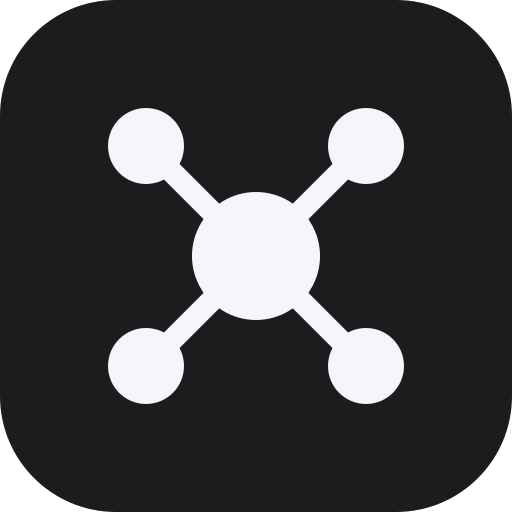

Здесь лежит работа над интерфейсом панели. Ничего отсюда не отдаётся сервером и не собирается в Docker — это стенд для просмотра макетов.
Актуальное — «Lanpaper 2.0». Прежние прототипы оставлены как история решений: на них видно, откуда взялись компактная плитка, пульт ссылки и палитры.
go run . в корне репозитория, затем
/admin.